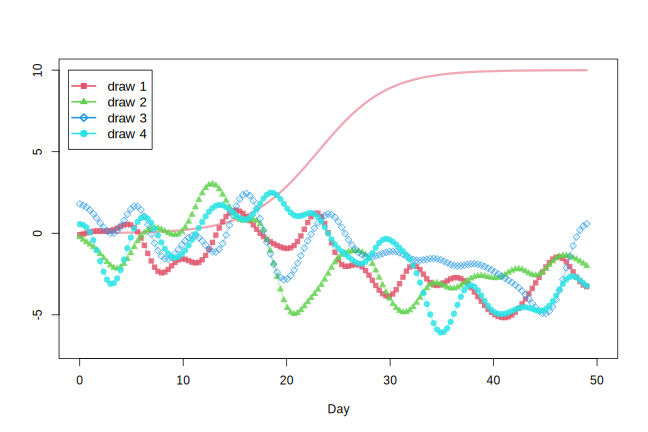

The ordinary differential equation in (1.1) expresses the rate of logistic growth of P. To compute the trajectory of the growth of P over time, the initial value of P needs to be first determined. This is often termed the initial condition of a dynamical system and we denote the initial condition as P_0 here.
\begin{equation}
\frac{d P}{dt} = r P (1 - \frac{P}{K})
\end{equation} \tag{1.1}
With a given P_0, we can integrate equation (1.1) over time to arrive at any value P_t where t>0, as shown in (1.2):
\begin{equation}
P_t = P_0 + \int_{0}^{t} r P (1 - \frac{P}{K}) dt
\end{equation} \tag{1.2}
Computationally, equation (1.2) can be re-expressed in forward Euler form as (1.3), where \Delta t \rightarrow 0. In practice, it would be computationally prohibitive for \Delta t to approach zero. Thus a small value of \Delta t is chosen to give a good enough approximation to the P_t values. In addition, more complicated but also more accurate procedures such as the Runge-Kutta 4 (RK4) method are often used instead of the forward Euler method to achieve better numerical stability.
In R, expression (1.3) can be implemented with the numerical integrators provided in the deSolve package. The code below uses deSolve to compute the trajectory of P_t over 49 days and reproduces Figure 4 in the main article.
Code
library(deSolve) # ODE numerical solverssource("utils.R") # helper functions# Define ordinary differential equation for logistic population growthlpg =function(Time, State, Pars) {with( as.list(c(State, Pars)), { dP = r * P * (1- P/K)return( list(c(dP)) ) })}# ODE solverODE =function( r=.3, K=10, P0=.01 ) { pars =c( r = r, K = K) # ODE parameters init =c( P = P0 ) # Initial condition times =seq(0, 49, by=.01) # Time points to compute values out =ode( init, times, lpg, pars ) # Integrate out}# Plotpar( mfrow=c(1, 2) )plot(1, type="n", xlab ="Day", ylab ="P", ylim=c(0,10), xlim=c(0,50))lines( ODE(r=.2, K=10, P0=.01), col =col.alpha(2,1), lwd=2)lines( ODE(r=.3, K=10, P0=.01), col =col.alpha(2,1), lwd=3)lines( ODE(r=.4, K=10, P0=.01), col =col.alpha(2,1), lwd=4)legend(30, 2.5, c("r = .2 K = 10", "r = .3 K = 10", "r = .4 K = 10"), col=2, lwd=2:4)plot(1, type="n", xlab ="Day", ylab ="P", ylim=c(0,10), xlim=c(0,50))abline(h=c(10,8,6), col="grey", lty="dashed", lwd=2)lines( ODE(r=.3, K=10, P0=.01), col =4, lwd=4)lines( ODE(r=.3, K=8, P0=.01), col =4, lwd=3)lines( ODE(r=.3, K=6, P0=.01), col =4, lwd=2)legend(30, 2.5, c("r = .3 K = 10", "r = .3 K = 8", "r = .3 K = 6"), col=4, lwd=4:2 )
2 Gaussian Processes
Gaussian processes are used to model the covariations between a set of categories as a function of the distances between them. At the core of Gaussian processes is a kernel function that defines how the covariance is computed from the distance. There are multiple popular choices for formulating the kernel function. Here, we select the form specified in (2.1). Figure 1 plots three kernel functions, showing how the covariance decays differentially as the distance increases according to different parameter values of \rho.
k = \eta ~ \text{exp}( -\rho \text{d}^\text{2} ) \tag{2.1}
With a chosen kernel function, the covariance matrix between any set of categories can be computed, given their pairwise distances. In the main article, we apply the kernel function in (2.1) to time series observations, defining the difference in time between two observations as the distance between them. We can therefore arrive at a covariance matrix specifying the covariance between any pair of observations, and sample the full set of time series observations from the multivariate normal with the aforementioned covariance matrix. Formally, this is expressed in (2.2):
The code below reproduces Figure 3 in the main article, in which four independent sets of time series are drawn from a common multivariate normal, whose covariance matrix is generated by a kernel with the parameter \eta=2 and \rho=.15.
Code
# Simulate time series with Gaussian processGP =function(max_cov, rate, distMat, delta=0) { # Gaussian kernel function m = max_cov *exp( - rate * distMat^2 ) diag(m) =diag(m) + delta m}n_days =49obs_times =seq(0, n_days, length=150)obs_dist =dist(obs_times, diag=T, upper=T) |>as.matrix()K =GP( max_cov=2, rate=.15, distMat=obs_dist )set.seed(10)plot(1, type="n", xlim=c(0,50), ylim=c(-5,5.2), xlab="Day", ylab ="N")for ( i in2:5 ) { N = MASS::mvrnorm( 1, rep(0,length(obs_times)), K )lines( obs_times, N, col=col.alpha(i,.3), lwd=2 )points( obs_times, N, col=col.alpha(i,.8), pch=c(15,17,23,19)[i-1] )}legend(-1.1, 5.3, paste("draw",1:4), col =2:5, pch=c(15,17,23,19), lty=1, lwd=2, cex=1.1 )
Linking P to N
As described in the main article, the mean of the multivariate normal in (2.2) can be used to model the long-term impact of P on N, as formulated in Eq. (4.1) in the main article and listed below:
The code below implements (4.1) and reproduces Figure 7 in the main article.
Code
# Integrated form of logistic growthP_growth =function(t, r, K, P0) K / ( 1+exp(-r*t)*(K-P0)/P0 ) # "K" is carrying capacity hereP =P_growth(obs_times, r=.3, K=10, P0=.01)gamma = .3set.seed(10)plot(1, type="n", xlim=c(0,50), ylim=c(-7,10), xlab="Day", ylab ="")lines(obs_times, P, lwd=3, col=col.alpha(2))for ( i in2:5 ) { N = MASS::mvrnorm( 1, -gamma * P, K ) # "K" is the covariance matrix herelines( obs_times, N, col=col.alpha(i,.3), lwd=2 )points( obs_times, N, col=col.alpha(i,.8), pch=c(15,17,23,19)[i-1] )}legend(-1.1, 10, paste("draw",1:4), col =2:5, pch=c(15,17,23,19),lty=1, lwd=2, cex=1.1 )

3 Simulation
The simulation as described in the main article is conducted in two steps. First, the 98 observations of the N-process are simulated with R (R Core Team, 2022), as documented in the get_params() function in model/utils.R. Subsequently, using cmdstanr(Gabry, Češnovar, & Johnson, 2023) as the interface, the parameter values, as well as the simulated N-process, are passed in as data to Stan (Carpenter et al., 2017) to conduct the remaining simulation. The code for the second part of the simulation is available in model/sim.stan. We reproduce the simulation and Figure 4 of the main article below.
Code
source("utils.R")set.seed(1024)# Set parameters for simulation # see main article for a description of the parametersParams =get_params(n_days =49,n_obs_times =98,# P-processP0 = .01 ,K =10 ,r = .3 ,# N-processmax_cov =2,rate = .2,# Measurement of P-processa1 = .78 ,b1 = .744 ,c1 =3.14 ,s1 = .5 ,# Measurement of N-processa2 = .6 ,c2 =0 ,s2 = .5 ,N =NULL,obs_times =NULL)# Run simulationsim =simulate(Params, "sim.stan")
Running MCMC with 1 chain...
Chain 1 Iteration: 1 / 1 [100%] (Sampling)
Chain 1 finished in 0.0 seconds.
Two statistical models were constructed following the description of the main article. The first model, which infers parameters from a single set of time series data, was fitted three times—the first was fitted with 49 observations and the second and third with 98 observations. The simulated observations for the first and second fit have a higher measurement error (\sigma = 0.5) whereas the simulated observations for the third fit have a lower measurement error (\sigma = 0.1). The second model, extended from the first model to include two parallel time series observations, was fitted with a total of 98 observations, with 49 observations for each time series. See model/fit.R for the code to fit the models.
MCMC Diagnostics
Four MCMC chains were used for each fit, with 150 collected samples and 300 warmup samples for each chain. All fits, except for the fit with a lower measurement error, proceeded smoothly with no divergent transitions and maximum tree depth reached. From the inspection of the trace plots, the four chains mix well for all fits1. We list the diagnostic summaries for the four fits below:
Code
m1.49=readRDS("data/m1-49.RDS") # 1st model with 49 obs.m1.98=readRDS("data/m1-98.RDS") # 1st model with 98 obs.m1.98.sd =readRDS("data/m1-98-sd.RDS") # 1st model with 98 obs. & low measurement errorm2 =readRDS("data/m2-49.RDS") # 2nd model with 49 obs.for ( i in1:4 ) { m =c(m1.49, m1.98, m1.98.sd, m2)[[i]] n =c("m1.49", "m1.98", "m1.98.sd", "m2")[i]cat("-------------\n")cat("[", n, "]\n")print( m$diagnostic_summary() )}
The third model m1.98.sd has a high percentage of MCMC sampler reaching maximum treedepth. This signals that the MCMC sampler cannot efficiently explore the posterior distribution, which can arise for many reasons and is idiosyncratic to the constructed model. Given that all other models have no difficulty for the sampler and the contradictory fact that imposing stronger constraints on the model (through more accurate observations) leads to a difficult posterior for the sampler, we infer that the task we wish the model to accomplish—inferring and separating two latent dynamics (the P- and N-process) from a single time series—is inherently hard or even impossible since the data and the assumed data-generating process do not strongly identify such latent dynamics.
Posterior Predictions
In Bayesian inference, samples drawn from the parameters’ posterior distribution (i.e., posterior samples) are available after the model is fitted to the data, which can then be used for generating predictions that are compared to empirical data. The posterior distribution can be thought of as the fitted model’s belief of the parameters’ true values. To generate predictions according to the posterior, we simply pass in the posterior samples as data to the simulation described in Section 3. For each of our fitted models, 600 sets of posterior samples are available (150 sets \times 4 chains). The size of a set of posterior samples corresponds to the number of parameters in the model. To avoid cluttering the plot, we draw only 20 sets of posterior samples for plotting. See model/post_predict_cache.R for the code to collect posterior samples. We reproduce Figure 5 in the main article below.
Code
source("post_predict.R", encoding ="UTF-8")
Running MCMC with 1 chain...
Chain 1 Iteration: 1 / 1 [100%] (Sampling)
Chain 1 finished in 0.0 seconds.
Running MCMC with 1 chain...
Chain 1 Iteration: 1 / 1 [100%] (Sampling)
Chain 1 finished in 0.0 seconds.
Running MCMC with 1 chain...
Chain 1 Iteration: 1 / 1 [100%] (Sampling)
Chain 1 finished in 0.0 seconds.
Running MCMC with 1 chain...
Chain 1 Iteration: 1 / 1 [100%] (Sampling)
Chain 1 finished in 0.0 seconds.
References
Carpenter, B., Gelman, A., Hoffman, M. D., Lee, D., Goodrich, B., Betancourt, M., … Riddell, A. (2017). Stan: A Probabilistic Programming Language. Journal of Statistical Software, 76, 1. https://doi.org/10.18637/jss.v076.i01
Gabry, J., Češnovar, R., & Johnson, A. (2023). Cmdstanr: R interface to ’CmdStan’ [Manual].
R Core Team. (2022). R: A language and environment for statistical computing [Manual]. Vienna, Austria: R Foundation for Statistical Computing. Retrieved from https://www.R-project.org/
Computing Environment
All packages except stom are available from CRAN. To install stom, simply run:
install.packages("remotes") # if not installedremotes::install_github("liao961120/stom")
To inspect the trace plots, run the code in model/diagnose.R for each of the fitted models by modifying the path to the fitted model (model/data/m*.RDS) at the beginning of the script.↩︎